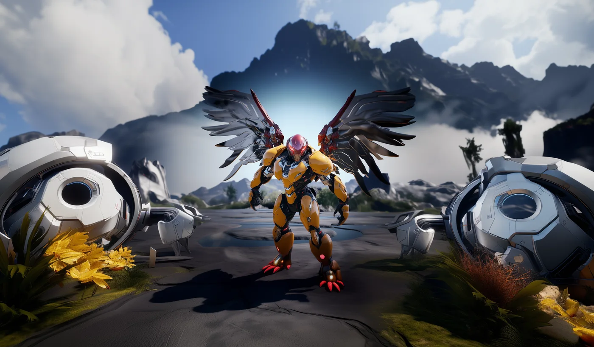
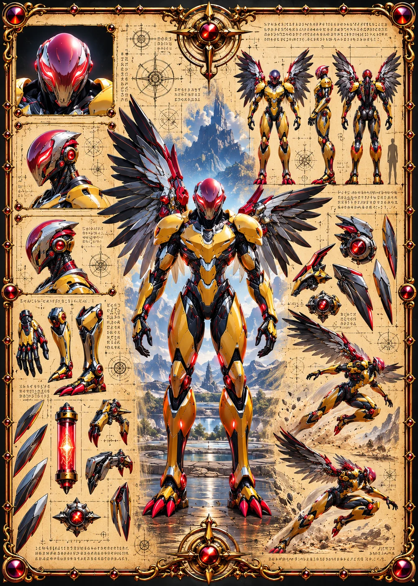

©
©
GENEZYS ARCHIVE · Earth 1 · Legionnaire
Myzar
Meteor Lancer

Archive record
Myzar trains by falling. From the edge of the sky, the Meteor Lancer drops in a blazing arc and lands where an enemy line is weakest: at its edges. When the Beacon calls, Myzar intends to arrive first, and from above. Some say Myzroth and Myzar share more than a name.
Combat signature
Comet Impact
150 Cosmara
230 Animus
260 Vitalis
Crashes down with astronomical force: Deals 110 damage to enemies on the edges.
Genezys 01:05 ™&©2026LEGIONS
